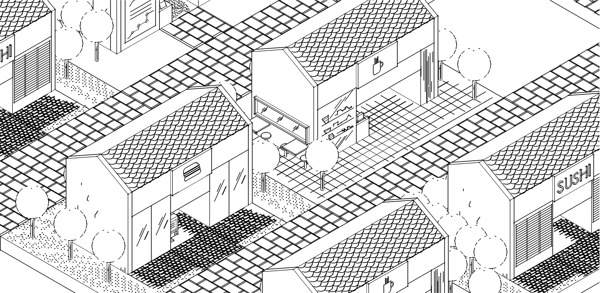

I like making stuff
Hi!
I'm a Singapore-based multi-disciplinary creative/human.
I gathered my first experiences in digital products at National Gallery Singapore, researching, editing and writing web content.
My prior background in Architecture led me to consider the harmonising of physical and digital experience, leading to improved visitor engagement. I also checked the accessibility of tour routes, and considered how the digital platform could aid tour wayfinding for visitors.
In addition to collaborating with stakeholders to ensure content accuracy, I also drew up wireframes with actual content, leading to stakeholder approvals.
I would consider myself to be explorative, curious and detail oriented by nature. Due to my interest in history and heritage, I am currently creating a history map mobile application which introduces little known historical places of interest around Singapore.
Being in the Architecture industry for 10 years, one of the most important things I've learnt is how to get along with different people. I think it's important to be nice.
Lastly, I believe that empathetic, iterative and collaborative design leads to better outcomes.
Thank you for reading this far and please contact me at tovyakoh@gmail.com for enquiries!
Or connect with me on linkedin